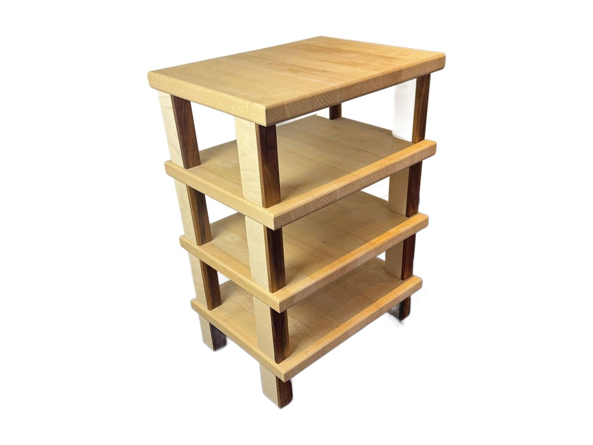
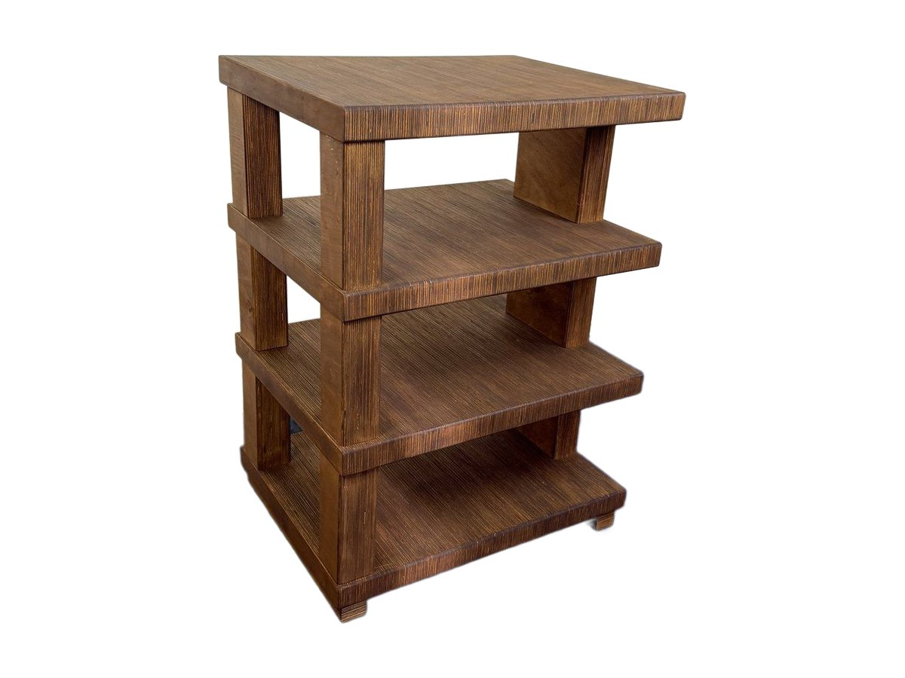

Hi-fi furniture
Hi-fi furniture and audio racks, handmade.
Solid wood furniture and racks for turntables, amplifiers and electronics. They suit any equipment: every shelf carries the weight, lets air through, and the wood keeps the system steady.

Extrasound Vinyl hi-fi rack
The turntable on top, the amplifier in the middle, up to 90 records below. In solid Beech or American walnut.
See the Vinyl
Extrasound Classic hi-fi rack
The simplest hi-fi rack: four shelves in natural solid beech, sturdy and compact, for living room or study.
See Classic
Extrasound Elegant hi-fi rack
Three solid beech shelves between almost-black solid wenge uprights: a sharp contrast for turntable and electronics.
See Elegant
Extrasound Minimal hi-fi rack
Four 38 mm shelves in walnut-stained solid beech on painted steel uprights: clean lines for a tidy system.
See Minimal
Extrasound Style Council hi-fi rack
A compact, solid rack: four beech plywood shelves 4.4 cm thick, full side panels, and a fully usable top.
See Style Council
Extrasound Multiblade hi-fi rack
Solid beech shelves with mahogany edges, on chrome-plated steel uprights: four levels for turntable, electronics and accessories.
See Multiblade
Extrasound Tangerine hi-fi rack
Solid beech shelves a full 68 mm thick, held by bubinga uprights: a substantial piece, made for quality systems.
See Tangerine
Extrasound Leaf hi-fi rack
Four solid doussié shelves 4 cm thick, held by chrome-plated steel uprights: a warm, bright piece for turntable and electronics.
See Leaf
Extrasound Floor hi-fi rack
A low, wide rack in solid ash: 80 × 40 cm shelves, 4 cm thick, for a complete system with everything within reach.
See FloorNeed a different size?
Fabrizio also builds new pieces, to the dimensions of your equipment and your home.